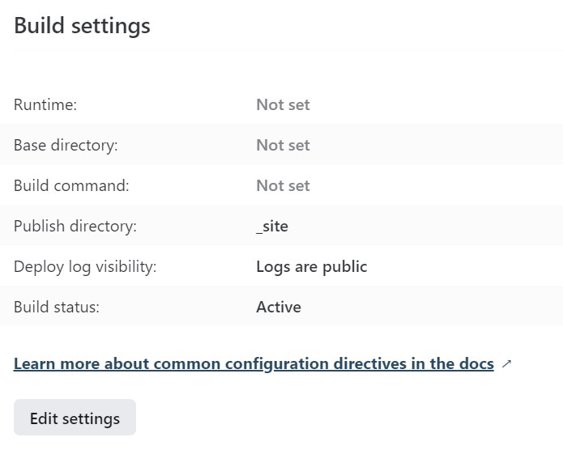

Switching to Quarto from Blogdown
It all started when I decided to change up my Hugo theme. Up until that point I was happily using the Blogdown add-in for RStudio to initiate new blog posts. At some point the default directory structure for Hugo blogs changed and when I tried to update my theme the whole web site got impossibly messy and finally broke. I managed to cobble it back together but I really had no idea what I was doing and became afraid of messing with it any more. This led to bloggers block.
This post assumes you want to change your Hugo website that you already built on Netlify to use Quarto. If you are looking to a basic tutorial on building a Quarto web site look here.

When Quarto came on the scene I was attracted to the idea of starting fresh but also intimidated by the thought of porting all my old content from R Markdown to Quarto. Plenty of people told me that R Markdown was not going away and there was no big need to switch. It is the big improvement over Blogdown/Hugo for blogging that has made me a convert. Quarto is simpler.
Ideally you should just be able to render the R Markdown code in Quarto and it will just work. For me, the problem was that many of my posts would no longer render in R because of package updates or out-of-date web links. Quarto solves that problem with the freeze option but it only works for content that has been rendered at least once with Quarto.
I needn’t have fretted. It turns out porting old blog or web content is ridiculously easy, though the existing Quarto guides don’t discuss this one simple trick. Here’s the TL;DR version: all you have to do is change the file extension of your fully rendered HTML files from .html to .qmd and Quarto will happily render them, wrapping its own HTML code around the old HTML but not otherwise messing with it. Any theming or subsequent changes in theming will be properly rendered. You can get rid of your old R Markdown files (though they will live in GitHub forever, right?).
I never did figure out the directory structure of a Hugo web site. Fortunately, Quarto is much simpler. The main directory and subdirectories of your blog contain all the Quarto files. You can name them as you like. One special directory called _site contains the rendered HTML files. It will be created the first time you render your site. There are a few more things to do to bring it all together. Let’s go through them step-by-step.
Assuming you Create New Project in RStudio a subdirectory will be created called
posts. Create a sub-folder in yourpostsfolder to hold the converted file. Use any name but I like the form yyyy-mm-dd_name-of-post. This will allow displaying the posts in date order.Copy old rendered HTML document (not the RMD markdown document) to the new folder.
Rename copied HTML file from <filename>.html to <filename>.qmd.
Load QMD file into RStudio for some light editing.
Blogdown uses tags and categories in the YAML header while Quarto uses only categories. In the editor, combine the YAML header
tagsandcategoriesinto justcategories.So this:
categories: - R tags: - quarto - bloggingbecomes this:
categories: - R - quarto - blogging
Quarto is great but YAML sucks. Who’s idea was that? Just Google ‘YAML sucks’ to see all the reasons why. RStudio’s YAML completion helps….a little.
Of course you want your code snippets to have a consistent theme. Quarto uses a different HTML class id to style code snippets but that’s easily fixed. In the editor Search/Replace all instances of
class="r"toclass="sourceCode r".Most of your posts will have images you added or images that were generated during the render. We need to put those old images in a place where Quarto can find them. Create a sub-folder below the one just created called
img.Copy any image files from the old version over to the
imgdirectory we just made.In the editor, fix path names of any image files to point to the
imgfolder. A quick search-and-replace should do it. The HTML tags will look like:<img src="somwhere_else/my_old_folder/unnamed-chunk-13-1.png" width="672" />which you should change to:
<img src="img/unnamed-chunk-13-1.png" width="672" />Repeat the steps above for additional posts.
Does your blog use any Javascript HTML widgets? In my case a post that used the the
Plotlypackage created some. These will be found in your old site in thermarkdown-libsfolder. Copy this folder over to the base directory of your new blog. Back in the editor make sure any lines of HTML that containrmarkdown-libshave a valid path to new location. As a side note, if you render the file as R code, Quarto will put those widgets in a directory calledsite-libs.Save and Render. Done!
From this point you can go down the rabbit hole and play with all the theming and formatting options that Quarto allows. You’ll make most of these changes in your index.qmd and _quarto.yml files. Any changes you make will be reflected in your old posts. Easy peasy!
I really liked the Blogdown add-in for R Studio as it made initiating a new post very easy. Thomas Mock has made a start on this with a quick function to start a new Quarto post. Check it out.
Publishing Your Blog on Netlify
You will have to make some tiny changes before Netfliy will re-publish your sparkling remodeled blog.
Once you are happy with the finished port, delete everything in the old blog’s directory EXCEPT the
.gitfile. Copy everything from the new blog EXCEPT the.gitfile over to the old directory. It’s scary but you are just burning the old site down.Git should show all the deletions and additions to be made to the repo. Commit them all and push to GitHub.
Now visit your deploy settings at Netlify.com. You’ll find them at https://app.netlify.com/sites/<yoursitename>/settings/deploys.
Click on
You’ll change the build command from “Hugo” to nothing and change the publish directory to “_site.” Then save.

That’s it! Netlfiy should regenerate your site in a few seconds and you are back in business. Have fun!
Thanks to Emily Robinson for jump starting me on this project. She pointed me to great resources on writing a Quarto blog and convinced me that “you can do it!”